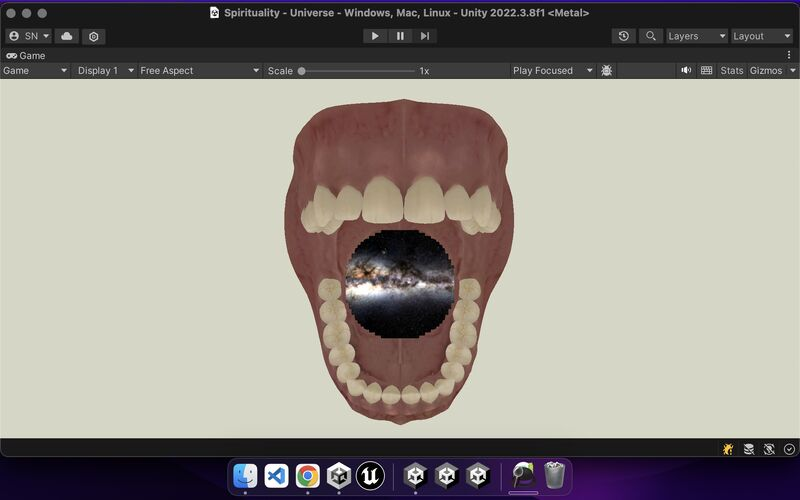

The Supreme's Story: Lord Krishna's Divine Leela / The Art of Rendering Realities and Render Textures in Unity
In the serene village of Vrindavan, young Lord Krishna spent his days immersed in playful adventures with his friends. Whether tending cows, wandering through lush meadows, or engaging in innocent mischief, Krishna's childhood was filled with charm and divine grace.
One day, while playing in the muddy fields, Krishna's friends noticed something unusual. They saw him pick up a handful of mud and taste it. Concerned, they hurried to Mother Yashoda and complained about Krishna's latest prank.
Yashoda immediately approached Krishna and questioned him. Standing before her with his innocent smile, Krishna denied having eaten any mud. Yet the traces around his lips suggested otherwise. Determined to discover the truth, Yashoda asked Krishna to open his mouth.
What Yashoda witnessed next was beyond the limits of ordinary human comprehension. Inside Krishna's tiny mouth, she beheld the entire universe—galaxies, stars, planets, mountains, rivers, oceans, forests, living beings, and the infinite cosmic expanse itself. Everything that existed appeared to reside within him.
Overwhelmed by this divine revelation, Yashoda struggled to understand what she was seeing. In that moment, Krishna revealed his true nature as the Supreme Being. The universe was not merely created by him—it existed within him. The child standing before her was none other than the all-pervading Lord of creation.
As the divine mystery unfolded, Krishna manifested his transcendental form as Lord Vishnu, filling Yashoda with profound awe and reverence. From that day onward, she understood that her beloved son was the Supreme Lord himself, and her devotion deepened immeasurably.
Render Texture in Unity
In Unity game development, a Render Texture is a powerful feature that allows the output of one camera to be captured and displayed as a texture elsewhere in a scene. It is commonly used to create mirrors, surveillance cameras, portals, minimaps, and various advanced visual effects.
Rather than being restricted to a single viewpoint, a render texture enables an entirely different scene to be displayed within a confined surface. A complete world can be rendered and projected onto a small object while preserving all its visual complexity and depth.
Parallel Between Lord Krishna and Render Texture
The divine episode of Krishna revealing the universe within his mouth presents a fascinating conceptual parallel to Unity's render texture system.
Just as a render texture allows developers to project a vast digital reality onto a limited surface, Lord Krishna revealed an infinite cosmic reality within the small confines of a human mouth. While render textures expand beyond the limitations of a single camera's perspective, Krishna's divine revelation transcended the limitations of human perception itself.
Of course, spiritual traditions regard this event as a manifestation of divine omnipotence rather than technology. Yet for those who work with computer graphics or game development, it offers a beautiful analogy between ancient spiritual wisdom and modern rendering concepts.
Question for Reflection
"Did Lord Krishna, as the Supreme form, possess access to a divine 'render texture' technology capable of displaying the entire universe within a small human mouth, or is modern technology simply providing us with a faint glimpse of possibilities that the divine has always embodied?"